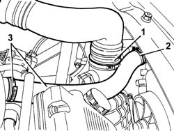
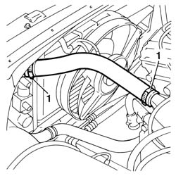
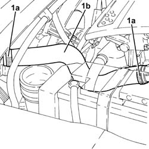
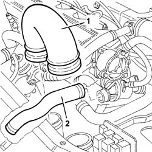
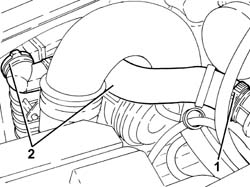
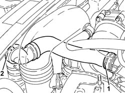

1088D14 upper sleeve for coolant inlet to radiator - r + r
- Path
- Procedures > 10 ENGINE > 1088 ENGINE COOLING > 1088D coolant hoses and sleeves > 1088D14 upper sleeve for coolant inlet to radiator - r + r
- Kind
- repair procedure (removal / refitting; the operation number is the code)
- Applies to
- engines: 1.6 TS , 1.8 TS, 2.0 JTS, 2.5 V6, 3.2 V6, 1.9 JTD 8v , 1.9 JTD 16v, 2.0 JTS, 2.4 JTD 10v, 2.4 JTD 20v; all production periods
- Interactive page
- https://sloeber94.github.io/elrnDB-a156/en/#/3237633
Applies to: engines: 2.5 V6, 3.2 V6; all production periods
 Removing
Removing
 Refitting
Refitting1. Disconnect the air supply hose from the air flow meter to the butterfly casing, air flow meter side, and move it to the side.
2. Disconnect the upper coolant inlet hose to the radiator, radiator side.
3. Disconnect the upper coolant inlet hose to the radiator, thermostat side and remove it.

Applies to: engines: 2.5 V6, 3.2 V6; all production periods
Refitting
RemovingFit the upper coolant inlet hose to the radiator and connect it to the thermostat and the radiator.
Connect the air supply pipe from the air flow meter to the butterfly casing, air flow meter side.
Supply the engine cooling system with the recommended fluid.
 | Type | Component | Name | Qty. |
|---|---|---|---|---|
- | Fluid [l] | ENGINE COOLING CIRCUIT | Mixture 50% Paraflu11 for Alfa Romeo/distilled water | 9.2 |
Applies to: engines: 1.6 TS , 1.8 TS; all production periods
Removing
RefittingPosition the vehicle on a lift and raise it.
7055B54 under-engine guard - r r
Disconnect the lower hose from the radiator side and leave the engine coolant to drain.
1. Lower the vehicle and loosen the two bands for the upper hose and remove it from the engine compartment.

Applies to: engines: 1.6 TS , 1.8 TS; all production periods
Refitting
RemovingPosition the upper hose and restrict the bands.
Reconnect the lower hose in position and restrict the band.
Refill the engine cooling system with coolant.
| Type | Component | Name | Qty. |
|---|---|---|---|---|
- | Fluid | ENGINE COOLING CIRCUIT | Mixture 50% Paraflu11 for Alfa Romeo/distilled water | 6.9 |
Raise the car.
Applies to: engines: 2.0 JTS, 2.0 JTS; all production periods
Removing
RefittingProceed with removal 1048A59 PIPE from flow meter to throttle casing hose - R.R. .
1. Loosen the bands (1a) and remove the upper coolant inlet hose to the radiator (1b).

Applies to: engines: 2.0 JTS, 2.0 JTS; all production periods
Refitting
RemovingPlace the radiator upper coolant inlet hose back in its housing and fasten it using the bands.
Proceed with refitting 1048A59 PIPE from flow meter to throttle casing hose - R.R. .
Top up the engine cooling system 0010T20 coolant change .
Applies to: engines: 1.9 JTD 8v , 2.4 JTD 10v; all production periods
Removing
Refitting1. Remove the rigid hose between the air filter and the turbocharger.
2. Remove the upper coolant inlet hose to the radiator.

Applies to: engines: 1.9 JTD 8v , 2.4 JTD 10v; all production periods
Refitting
RemovingFit the upper coolant inlet hose to the radiator.
Fit the rigid hose from the air filter to the turbocharger.
Applies to: engines: 1.9 JTD 8v ; all production periods
Top up the engine cooling system with coolant.
| Type | Component | Name | Qty. |
|---|---|---|---|---|
- | Fluid | ENGINE COOLING CIRCUIT | Mixture 50% Paraflu11 for Alfa Romeo/distilled water | 6.1 |
Applies to: engines: 2.4 JTD 10v; all production periods
Top up the engine cooling system with coolant.
| Type | Component | Name | Qty. |
|---|---|---|---|---|
- | Fluid [l] | ENGINE COOLING CIRCUIT | Mixture 50% Paraflu11 for Alfa Romeo/distilled water | 6.8 |
Applies to: engines: 1.9 JTD 16v; all production periods
Removing
RefittingPosition the vehicle on the ramp.
Proceed with removal 1016A10 sound-proofing cover - r + r .
Proceed with removal 7055B54 under-engine guard - r r .
1. Loosen band and disconnect the upper coolant inlet hose to the radiator thermostat side.
2. Disconnect the rapid connector for the upper coolant inlet hose to the radiator, radiator side, and remove it.

Applies to: engines: 1.9 JTD 16v; all production periods
Refitting
RemovingRefit the upper radiator coolant inlet hose and connect the rapid connector to the radiator.
Connect the upper coolant inlet hose to the radiator, thermostat side, and tighten the band.
Refill the engine cooling system with coolant 0010T20 coolant change .
Proceed with refitting 7055B54 under-engine guard - r r .
Proceed with refitting 1016A10 sound-proofing cover - r + r .
Remove the car from the ramps.
Applies to: engines: 2.4 JTD 20v; all production periods
Removing
RefittingPosition the vehicle on the ramp.
Proceed with removal 1016A10 sound-proofing cover - r + r .
Proceed with removal 5530B10 battery - r+r .
Proceed with removal 7055B54 under-engine guard - r r .
1. Loosen band and disconnect the upper coolant inlet hose to the radiator, thermostat side.
2. Disconnect the rapid connector for the upper coolant inlet hose to the radiator, radiator side, and remove it.

Applies to: engines: 2.4 JTD 20v; all production periods
Refitting
RemovingRefit the upper radiator coolant inlet hose and connect the rapid connector to the radiator.
Connect the upper coolant inlet hose to the radiator, thermostat side, and tighten the band.
Proceed with refitting 5530B10 battery - r+r .
Refill the engine cooling system with coolant 0010T20 coolant change .
Proceed with refitting 7055B54 under-engine guard - r r .
Proceed with refitting 1016A10 sound-proofing cover - r + r .
Remove the car from the ramps.
Topics linked from this page (5)
- 0010T20 coolant change
- 1016A10 sound-proofing cover - r + r
- 1048A59 PIPE from flow meter to throttle casing hose - R.R.
- 5530B10 battery - r+r
- 7055B54 under-engine guard - r r
Topics that link to this page (6)
- 1004B12 power unit with manual gearbox - r+r for versions with a/c
- 1016D21 lh cylinder head - r r and replace gasket for versions with air conditioner
- 1088A24 engine cooling radiator - r r for air conditioned versions
- 1088B20 engine cooling radiator - r + r
- 1088B24 engine cooling radiator - r r for air conditioned versions
- 1088C40 thermostat- r + r